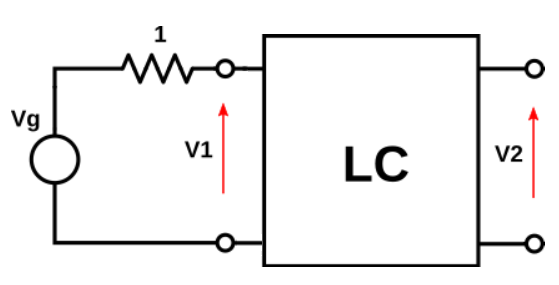

Trabajo semanal 12 - Síntesis de cuadripolos simplemente cargados
Dada la siguiente transferencia de tensiones:

\[T(s)=\frac{V2}{Vg}=\frac{k.s.(s^2+1/16)}{s^3+2.s^2+2.s+1}\]
Sintetizar un cuadripolo pasivo sin pérdidas, que cumpla con la transferencia de tension indicada, cargando a la entrada con una impedancia como se muestra en la figura.
Verificar la transferencia de tension del circuito obtenido.
Hallar el valor de k que cumple con la síntesis y valor de los componentes hallados.
Dada la siguiente transferencia de impedancia:
\[T(s)=\frac{V2}{I1}=\frac{k.(s^2+9)}{s^3+2.s^2+2.s+1}\]
Sintetizar un cuadripolo pasivo sin pérdidas, que cumpla con la transimpedancia indicada, cargado a la salida con una impedancia como se muestra en la figura.
Verificar la transimpedancia del circuito obtenido.
Hallar el valor de k que cumple con la síntesis y valor de los componentes hallados.
[272]:
import sympy as sp
from schemdraw import Drawing
import numpy as np
import scipy.signal as sig
import matplotlib.pyplot as plt
# Ahora importamos las funciones de PyTC2
from pytc2.sistemas_lineales import analyze_sys
from pytc2.remociones import remover_polo_dc, remover_polo_jw, remover_polo_infinito
from pytc2.dibujar import display, dibujar_puerto_entrada, dibujar_puerto_salida, dibujar_funcion_exc_abajo, dibujar_elemento_serie, dibujar_elemento_derivacion, dibujar_tanque_serie, dibujar_tanque_derivacion, dibujar_tanque_RC_serie, dibujar_espaciador, dibujar_espacio_derivacion, Capacitor, Resistor, ResistorIEC
from pytc2.general import print_latex, print_subtitle, a_equal_b_latex_s
from IPython.display import display, Markdown
# Resolución simbólica
s = sp.symbols('s', complex=True)
Ej1
Remociones
[273]:
# Sea la siguiente función de excitación
ZZ = (s*(s**2+2))/(2*s**2+1)
print_latex(a_equal_b_latex_s('Z(s)', ZZ))
$\displaystyle Z(s)=\frac{s \left(s^{2} + 2\right)}{2 s^{2} + 1}$
[274]:
Y, k0 = remover_polo_dc(1/ZZ, omega_zero=sp.Rational(1,4), isSigma=False)
print_latex(a_equal_b_latex_s('Yt_1(s)', k0))
print_latex(a_equal_b_latex_s('Y_1(s)', Y))
L1 = k0.subs(s, 1)**(-1)
$\displaystyle Yt_1(s)=\frac{14}{31 s}$
$\displaystyle Y_1(s)=\frac{3 \cdot \left(16 s^{2} + 1\right)}{31 s \left(s^{2} + 2\right)}$
[275]:
Z, kk, L2, C2 = remover_polo_jw(1/Y, omega=sp.Rational(1,4), isImpedance=True)
print_latex(a_equal_b_latex_s('L', L2))
print_latex(a_equal_b_latex_s('C', C2))
print_latex(a_equal_b_latex_s('Z_2(s)', Z))
$\displaystyle L=\frac{961}{48}$
$\displaystyle C=\frac{768}{961}$
$\displaystyle Z_2(s)=\frac{31 s}{48}$
[276]:
Y, k0 = remover_polo_dc(1/Z, isSigma=False)
print_latex(a_equal_b_latex_s('Yt_1(s)', k0))
print_latex(a_equal_b_latex_s('Y_1(s)', Y))
L3 = k0.subs(s, 1)**(-1)
$\displaystyle Yt_1(s)=\frac{48}{31 s}$
$\displaystyle Y_1(s)=0$
Circuito
[277]:
d = dibujar_puerto_entrada(Drawing(unit=4),
voltage_lbl = ('+', '$V$', '-'),
current_lbl = '$I$')
d = dibujar_elemento_derivacion(d, 'L', L1)
d = dibujar_tanque_serie(d, L2, C2)
d = dibujar_elemento_derivacion(d, 'L', L3)
display(d)
Verificacion
[278]:
YA = 1/(s*L1)
YB = 1/(s*L2) + s*C2
YC = 1/(s*L3)
Y = sp.Matrix([[YA+YB, -YB],[-YB, YB + YC]])
det = Y.det()
Z11 = sp.factor(sp.simplify(Y[1,1]/det))
Z21 = sp.factor(sp.simplify(-Y[0,1]/det))
H = sig.TransferFunction( [1, 0, 1/16, 0], [1, 2, 2, 1] )
analyze_sys(H)
print_latex(a_equal_b_latex_s('Z_{11}(s)', Z11))
print_latex(a_equal_b_latex_s('Z_{21}(s)', Z21))
print_latex(a_equal_b_latex_s('\\frac{V_2}{V_1}(s)', sp.factor(Z21/(1+Z11))))
$\displaystyle Z_{11}(s)=\frac{s \left(s^{2} + 2\right)}{2 s^{2} + 1}$
$\displaystyle Z_{21}(s)=\frac{s \left(16 s^{2} + 1\right)}{16 \cdot \left(2 s^{2} + 1\right)}$
$\displaystyle \frac{V_2}{V_1}(s)=\frac{s \left(16 s^{2} + 1\right)}{16 \left(s + 1\right) \left(s^{2} + s + 1\right)}$
Ej2
Remociones
[279]:
# Sea la siguiente función de excitación
ZZ = (2*s**2+1)/((s**2+2)*s)
print_latex(a_equal_b_latex_s('Z(s)', ZZ))
$\displaystyle Z(s)=\frac{2 s^{2} + 1}{s \left(s^{2} + 2\right)}$
[280]:
Y, Yt = remover_polo_infinito(1/ZZ, omega_zero=3, isSigma=False)
print_latex(a_equal_b_latex_s('Yt(s)', Yt))
print_latex(a_equal_b_latex_s('Y(s)', Y))
C1 = Yt.subs(s,1)
$\displaystyle Yt(s)=\frac{7 s}{17}$
$\displaystyle Y(s)=\frac{3 s \left(s^{2} + 9\right)}{17 \cdot \left(2 s^{2} + 1\right)}$
[281]:
Z, kk, L2, C2 = remover_polo_jw(1/Y, omega=3, isImpedance=True)
print_latex(a_equal_b_latex_s('L', L2))
print_latex(a_equal_b_latex_s('C', C2))
print_latex(a_equal_b_latex_s('Z_2(s)', Z))
$\displaystyle L=\frac{289}{243}$
$\displaystyle C=\frac{27}{289}$
$\displaystyle Z_2(s)=\frac{17}{27 s}$
[282]:
Y, Yt = remover_polo_infinito(1/Z, isSigma=False)
print_latex(a_equal_b_latex_s('Yt_1(s)', Yt))
print_latex(a_equal_b_latex_s('Y_1(s)', Y))
C3 = Yt.subs(s,1)
$\displaystyle Yt_1(s)=\frac{27 s}{17}$
$\displaystyle Y_1(s)=0$
Circuito
[283]:
d = dibujar_puerto_entrada(Drawing(unit=4),
voltage_lbl = ('+', '$V$', '-'),
current_lbl = '$I$')
d = dibujar_elemento_derivacion(d, 'C', C3)
d = dibujar_tanque_serie(d, L2, C2)
d = dibujar_elemento_derivacion(d, 'C', C1)
display(d)
Verificacion
[284]:
YA = s*C3
YB = 1/(s*L2) + s*C2
YC = s*C1
Y = sp.Matrix([[YA+YB, -YB],[-YB, YB + YC]])
det = Y.det()
Z22 = sp.factor(sp.simplify(Y[0,0]/det))
Z21 = sp.factor(sp.simplify(-Y[0,1]/det))
print_latex(a_equal_b_latex_s('Z_{21}(s)', Z21))
print_latex(a_equal_b_latex_s('Z_{22}(s)', Z22))
print_latex(a_equal_b_latex_s('\\frac{V_2}{I_1}(s)', sp.factor(Z21/(1+Z22))))
$\displaystyle Z_{21}(s)=\frac{s^{2} + 9}{9 s \left(s^{2} + 2\right)}$
$\displaystyle Z_{22}(s)=\frac{2 s^{2} + 1}{s \left(s^{2} + 2\right)}$
$\displaystyle \frac{V_2}{I_1}(s)=\frac{s^{2} + 9}{9 \left(s + 1\right) \left(s^{2} + s + 1\right)}$